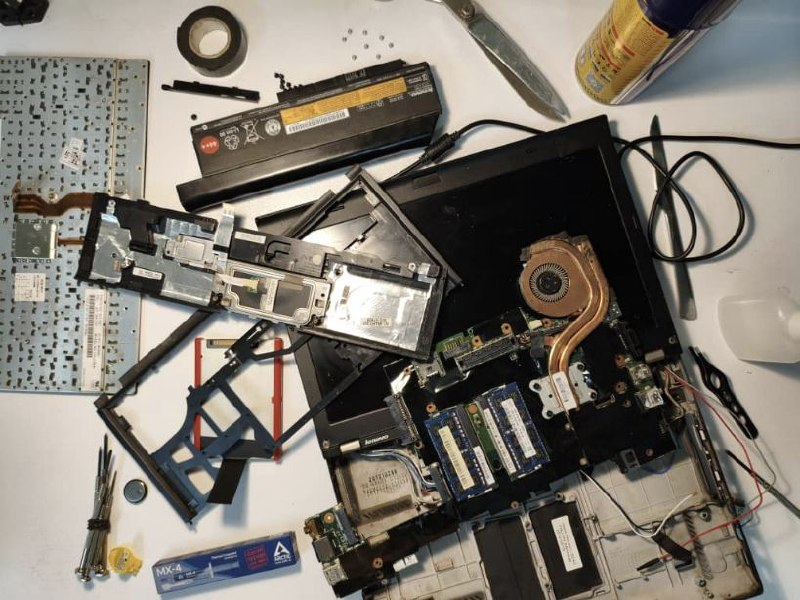
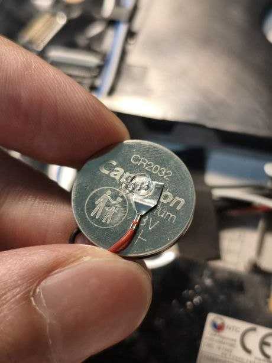
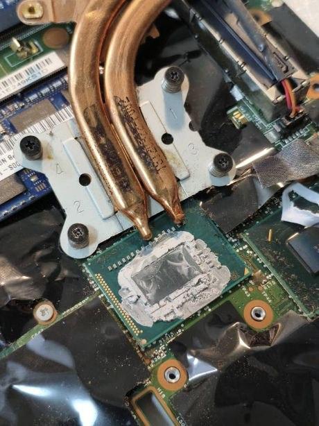
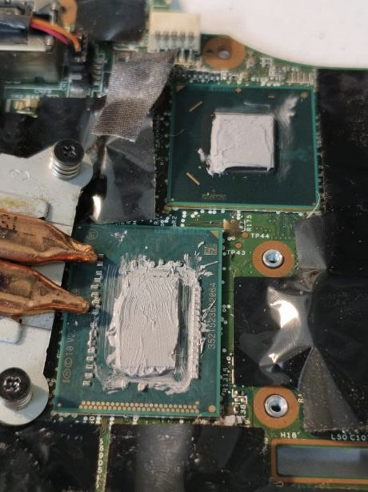
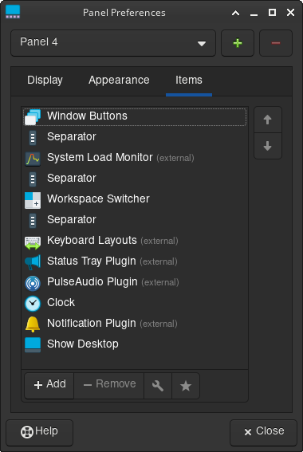

Setting Up Arch on an Old ThinkPad

Recently, I bought a used ThinkPad X230 for around $60. It came with a 3rd-gen i7 CPU, 8GB RAM, and a 180GB SSD. Decent specs for a family laptop.
The previous owner had a fresh install of Windows 10 on it, and idle RAM usage was over 2GB:

While on Arch + XFCE, it dropped to under 1GB:

Here is how.
Hardware#
Bofor installing Linux, I wanted to replace the thermal paste on the CPU and also swap the coin battery. This way, booting without the main battery (which was the upgraded 9-cell version, but completely dead anyway) would not require manually setting the date and time every time.

Alright, you got me. I had no reason to tear the whole thing apart. I just wanted to =)
Let the tear-down begin#

I removed the old coin battery and replaced it with a new one:

Then I cleaned off the old thermal paste:

And replaced it with new paste (probably a little too much):

Software#
Installing Arch#
With the help of the Arch Wiki, I went to the official Arch Linux download page, picked a mirror close to my location, and downloaded archlinux-2025.08.01-x86_64.iso (around 900MB).
Then I plugged in a USB drive (8GB was enough) and opened Rufus to make it bootable with these settings:
- Device: my USB stick
- Boot selection:
archlinux-2025.08.01-x86_64.iso - Partition scheme:
GPT - Target system:
UEFI (non-CSM)
Then I clicked START and selected Write in ISO Image Mode (Recommended)
After that, I switched the BIOS mode from Legacy to UEFI because apparently it’s the less painful option nowadays.
archinstall#
After booting into Arch ISO, I connected to Wi-Fi using the iwctl network configuration tool.
Then I typed archinstall to go to the guided installer. Because I’m not a wierdo.
These were my settings:
- Language/keyboard: en_US (added Persian later)
- mirror regions::
Iran(failed at first attempt)- Germany
- Netherlands
- Sweden
- Finland

- Disk: selected the 180GB SSD
- Disk layout:
Erase all - Bootloader:
systemd-boot - Filesystem:
ext4 - Hostname:
jfryusef - Root password: I’m not gonna tell you that
- User account: created one and enabled
(wheel)(admin) - Network:
NetworkManager - Kernel:
linux - Microcode:
intel-ucode - Profile:
Desktop→XFCE4(light and stable) - Audio:
pipewire - Optional packages:
firefoxand a few others (optional) - Timezone: Asia/Tehran
Then I hit Install.
Once the installation finished, I rebooted the system and removed the USB drive. XFCE booted correctly and I could log in immediately.
The hard-freeze problem#
Appearently, sometimes some old ThinkPads on modern Linux kernels hard-freeze because of aggressive C-states. Mine had it too.
Fix: add this kernel boot parameter: intel_idle.max_cstate=1
Installing stuff#
I opened a terminal and installed these packages:
-
sudo pacman -S
man-dbman-pages
(built-in documentation system for commands) -
sudo pacman -S
fwupd
(firmware updater) -
sudo pacman -S
bluezbluez-utils
(Bluetooth stack) -
sudo pacman -S
gvfsgvfs-mtp
(virtual filesystem support + Android MTP support) -
sudo pacman -S
thunar-archive-pluginp7zipunzipunrar
(archive utilities + Thunar integration) -
sudo pacman -S
brightnessctl
(screen brightness utility) -
sudo pacman -S
pipewirepipewire-pulsewireplumber
(Linux audio stack) -
sudo pacman -S
blueman
(GUI Bluetooth manager)
Then I enabled the required services:
systemctl --user enable -- now pipewire pipewire-pulse wireplumber
sudo systemctl enable --now bluetooth
sudo timedatectl set-ntp true
I also needed an AUR helper, so I installed yay:
sudo pacman -S --needed git base-devel
git clone https://aur.archlinux.org/yay.git
cd yay
makepkg -si
| pacman | yay |
|---|---|
sudo pacman -S firefox |
yay -S obsidian |
sudo pacman -S obs-studio |
yay -S anydesk-bin |
sudo pacman -S qbittorrent |
yay -S hiddify-app-bin |
| –snip– | –snip– |
Tweaking things#
Keyboard shortcuts#
Alt+T: terminal (xfce4-terminal)Super: application finder (xfce4-appfinder)Super+E: Thunar (thunar)- ThinkVantage button (
Launch1): logout menu (xfce4-session-logout)
I also changed the volume step size to 10% in xfce4-pulseaudio-plugin.
Workspace shortcut#
Alt+1: workspace 1Alt+2: workspace 2Alt+3: workspace 3Alt+4: workspace 4
Winndows management#
Alt+F: maximize windowAlt+Up: tile window to the leftAlt+Down: tile window to the rightAlt+Page Up: tile window to the top-leftAlt+Page Down: tile window to the top-rightAlt+Left: tile window to the bottom-leftAlt+Right: tile window to the bottom-right
(later regretted using Alt+Left and Alt+Right because they interfere with browser navigation shortcuts. But I kept using them anyway.)
Ricing?#
I used Open Sans + JetBrains Mono as my main fonts, and Gruvbox as the primary color palatte using this GTK theme.
For icons and cursors, I kept the default elementary theme.
These:

are the items on my panel (a 24px bottom row):
I set Smoothwall as my window decoration theme. A practical choice.
Then I switched my display manager from LightDM:
sudo systemctl disable lightdm.service
to Ly (a TUI login manager):
sudo pacman -S ly
sudo systemctl enable ly.service
I also installed this Gruvbox Firefox theme and this VS Code theme.
My Obsidian theme#
Since I couldn’t find any good ones for my usecases, I created my own Obsidian Gruvbox theme that uses Minimal theme as the base.
Once again, feel free to share similar projects.